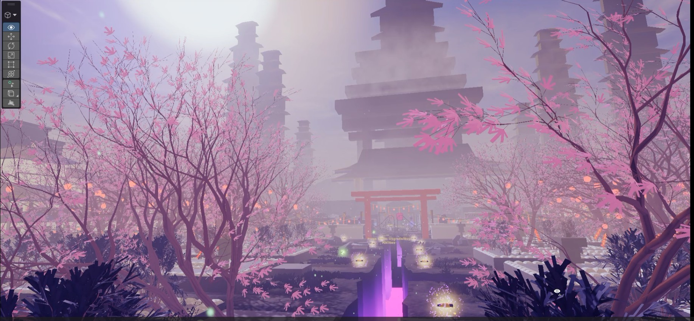
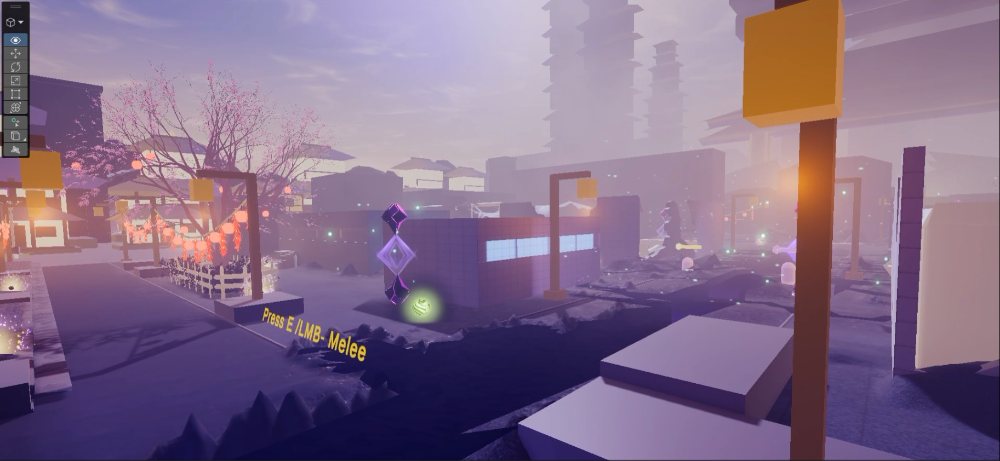
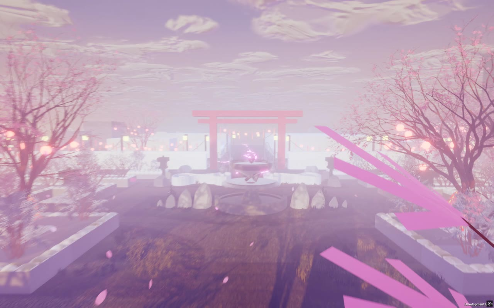
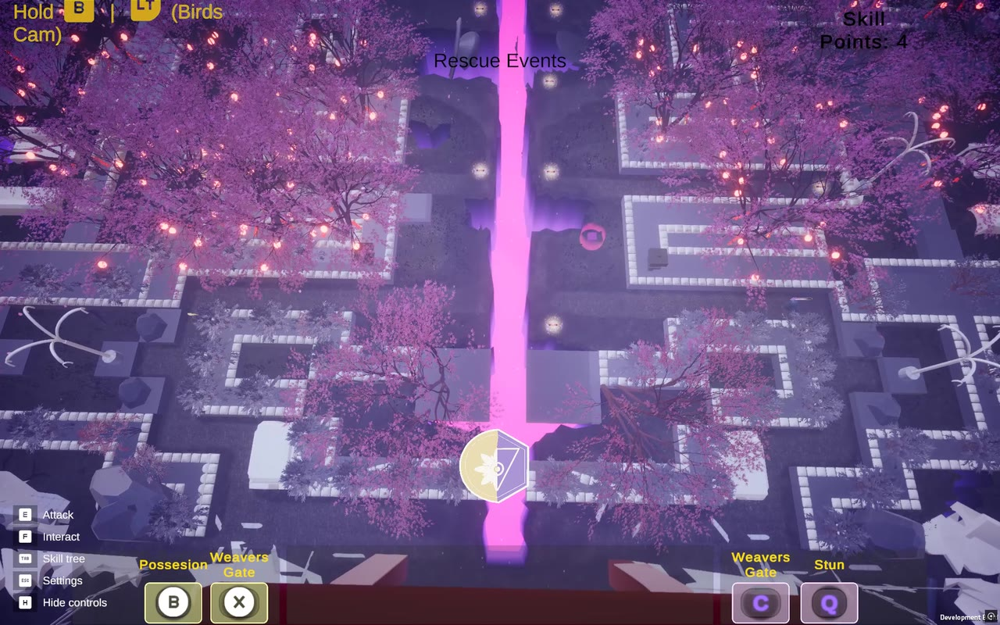
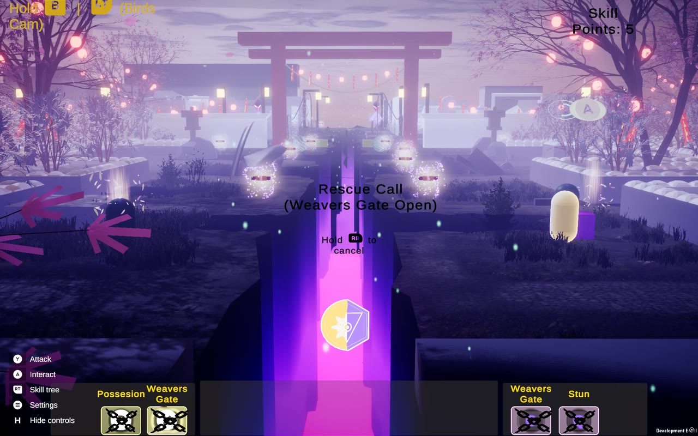
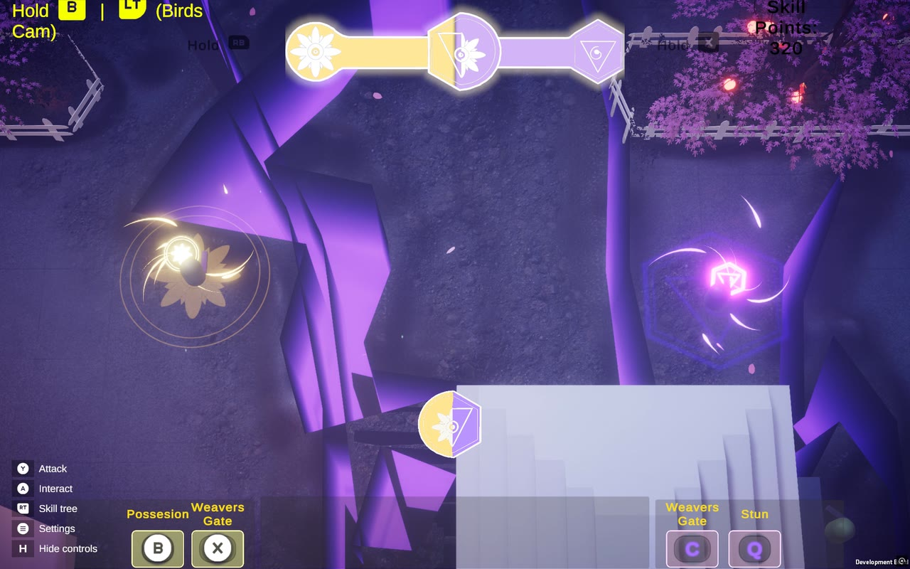

Projects / Planet of Twins
My original IP, in developmentPlanet of Twins
A co-op action-adventure for PC, with a single-player mode too. Two twins share one life, and the further apart they drift, the faster it drains.
- My role
- Producer, developer and designer
- Team
- Solo
- Timeline
- January 2026 to now
- Platform
- PC
- Engine
- Unity 6.3, URP, C#
- Status
- Playable build, in testing
In short
What it is, and what I do on it
The game
You guide two twins, Kai and Lyra, who share a single health pool. Closeness keeps them alive and distance drains them. Two players can take one twin each, or one player can drive both. In feel it sits between Brothers: A Tale of Two Sons and It Takes Two, with the combat of a character-action game.
My part
All of it. I own the roadmap, run the sprints, run the playtests and write the game. Every system on this page is one I designed and built.
Where it stands
A playable build with 23+ connected systems and couch co-op for two players. The first standalone build went into testing in October 2026.
Production
From the first idea to today
In the order it happened. Every stage opens up into its full story.
- January 2026
One rule: two twins, one life
The game started from a single rule. Two twins share one health pool: closeness keeps them alive and distance drains them. Everything since has been built around that bond.
Read the full storyShow less1 min read
Where the idea came from
Binary Land on the NES, where two penguins move as one. Planet of Twins makes that bond the thing at stake: the twins share one life.
The world
A stylised East-Asian fantasy setting. The villain inverts an ancient curse: where it once bound twins together, the planet now pulls them apart, and the people it corrupts become the enemies. The world is built warm and alive so that its corruption reads as grief. Defeated enemies were once neighbours, so their freed souls power the twins and every kill reads as a loss.
The twins
Kai carries the dark-energy side and Lyra the soul-light side. Each clan brings its own powers, used in combat and in puzzles.
Games it sits beside
Brothers: A Tale of Two Sons and It Takes Two for the bond between two characters, Unravel Two for two characters tied together, and character-action games for the combat.
The documents behind it
A story bible, now on its fourth version, and a colour bible that sets the palette of each clan.
Where the plan lives
No task board. The plan, the backlog, the bugs and the changelog live in plain text files next to the code, where every change can be traced.
- February to May 2026
A playable game in seven weeks
From the first commit in February to early April the core went in: the twins moving as one, their abilities, the rescue, a skill tree, checkpoints and the first enemy roster.
Moving as oneTwo characters that read as one connected unit. The rescue, April buildThe first Weaver's Gate rescue call. The Siphon, April buildOne of the first enemies, as it looked then. Read the full storyShow less1 min read
Week one
- Twin movement, with input handled through a command pattern
- The ability system, with possession and stun
- Soul transfer between the twins
March
- Two zones, the park and the streets, with a camera manager
- The first enemies: ranged and melee in two variants each, the Group Grabber, the Soul Summoner and skeleton-hand traps
- An enemy spawner, the rescue event, the skill tree, and health bars for the twins and the enemies
- Dual Cast, Soul Convergence and Coalesce
- QTE events built to scale, teleport cancel, the ability HUD, checkpoints and loading
End of March
- The accord bar and the Accord State powers: Setsuna, Radiant Seeker, Void Strike and the spirits
April and May
- Five more enemies: Tether Breaker, Severed, Penitent, Siphon and Witness
- Effects for every interaction
- Mouse controls: left button for melee, right button for abilities
- Greybox levels closer to the real layout
What did not hold
The Penitent needed a rework from the day it went in, and the whole game lived in one scene. As the world grew, that one scene became the next thing to fix.
- April 2026
Thirteen strangers, one honest verdict
I sent the April build to 13 players outside the project, with a 21-question form. The twin rule held up: 12 understood it without being told. Almost everything around it did not: nobody could use the Accord State, 7 found the rescue confusing, and 9 asked for a tutorial.
DecisionAsk outside players early. A loop nobody outside has played is a guess, so the form went out before the world was built around it.What held up
What did not
13 players outside the project, April 2026, a 21-question form.
Read the full storyShow less2 min read
How it ran
Players downloaded the April build, played for 10 to 40 minutes, and answered the form: how the twins felt to control, whether the shared health and the rescue made sense, whether they found the Accord State, how the enemies read, and how they felt afterwards. One even ran it on Linux through Wine, with no problems.
The four friction points
- Nothing taught the game. Mechanics had to be discovered, and a prompt that said press did not say mash.
- The rescue confused. Players lost a twin without knowing why, and some ended up harming the twin they meant to save.
- The Accord State went unseen. Not one player used it with any understanding.
- The fight was hard to read. The camera sat too low to keep both twins in view, and the enemies all looked like chaos.
What players said, and what changed
- Explain the mechanics. A tutorial now teaches one mechanic at a time, each with a short video: moving the twins, quick time events, shared health and the rescue.
- Press X does not say mash X. Prompts on screen show the right key or controller button for each player, and the rescue ring pulses to say mash.
- I lost a twin and didn't know why. The rescue got a countdown ring, a prompt at the soul and a tutorial step of its own.
- Put the camera higher. The game now plays from high above the twins, with a bird's-eye view on a held button.
- It all felt like chaos. Every enemy now shows its mood with a manga-style symbol, so its next move can be read.
- Break the mirror with a second player. Couch co-op, already planned, is now built and playtest-ready: two players, one twin each.
- Give me a pause screen with a way out. A full pause and settings screen, with controls each player can rebind.
- It is too grey-box to feel immersed. The world got its light, weather and colour over July and August.
What it told me
The idea worked. What failed was how the game taught and showed it, and much of the work since answers one of these points.
- June 2026
Rebuilt to hold a whole world
I split the game into scenes that stream in and out as the twins move, wrote one rulebook for how those scenes may reference each other, and built the tools that enforce it.
DecisionRules before content. A game streamed across many scenes breaks quietly when one scene reaches into another, so the rules and the tools came before any new area.Starts the game, onceNever unloadsBootstrapStarts every system in order→Front endThe menu, character select and save slots→IntroThe moment before the disaster, with the world loading behind itStreams in and out around the twinsPersistentEvery manager, the twins, the HUD and the pause menu. Areas talk to it only through the rules.L0 City WaterL1 ParkL2 StreetsL3 AlleyL4 MuseumL5 FieldsWith the twins in the streets: their area and its neighbours are loaded, the rest wait until the twins come near.
Read the full storyShow less1 min read
How the game loads
- A bootstrap scene starts the game, and a persistent scene holds every manager and never unloads
- Areas stream in and out around the twins: the area they stand in and its neighbours stay loaded
- The moment before the disaster plays as a cutscene while the world loads behind it, and players can skip it
The rulebook
Eleven rules for every reference that crosses from one scene to another, so an area can load and unload without leaving broken links behind.
Eight phases of hardening
- Clear entry paths, and exactly one of every manager
- Failure and reset moved into the persistent scene
- Registries, pooling and streaming reworked
- Skill-tree progress moved off the shared data asset, where it did not belong
- One owner for game time, so slow motion and pauses never fight each other
- Dead code deleted, and a soft reset that needs no scene reload
One call for every effect
The Cue Book: one call plays the particle, the visual effect, the sound and the camera shake together, with engines for sound, music and mixing behind it.
Enemies that show how they feel
Manga-style mood symbols over each enemy, so the player can read its mood at a glance.
Tools that keep the rules
An editor toolset with a validator, auto-wiring, a new-area generator and a checker for effect ids.
What went wrong
The split caused one game-breaking bug: the enemies could no longer see the player. It went to the top of the list, was traced and fixed, and the smaller AI bugs behind it were cleared the same way.
- July 2026
Two test rounds before building more
With the world rebuilt, two more rounds of playtesting ran back to back. 26 bugs were found and fixed in that one week, one of them game-breaking and 17 major, and each fix was played again before it was closed.
DecisionTest before building more. The rebuilt game had to play as well as the old one before anything new was stacked on top of it.Read the full storyShow less1 min read
Getting ready
A ten-part engineering pass came first: the new input system, a dev scene for trying any power or enemy, a scene health dashboard, pooling for everything spawned in play, and colour grading that follows the story.
The week, by severity
- 1 game-breaking, 17 major, 7 minor. All fixed and played again inside the week. The game-breaking one went first.
What players will feel
- Combat. Ranged attacks, aiming and the chain throw reworked; the chain now pulls like Roadhog's hook in Overwatch.
- Readability. The Weaver's Gate rescue made easier to follow, and the mood symbols over the enemies brought back.
How a fix counted as done
Each fix was played again in the dev scene before it was closed, and the two rounds ran back to back.
- July and August 2026
A look for the world, and a plan behind it
The world got its light, weather and colour. Alongside it the game got a business case: a pitch deck in four versions, a one-page summary and a plan with three milestones.
DecisionA product, not a demo. A prototype with no plan behind it cannot be scheduled or pitched, so the plan was written alongside the build.
The worldBuilt warm and alive, so that its corruption reads as grief. 
Light and weatherA stylised East-Asian fantasy setting. Read the full storyShow less1 min read
The look
- Six story grades that shift the colour of the world as the story moves
- Sky states for day, golden hour and dusk, with a moon and sun shafts
- Fog, wind that sways lanterns and cloth, and rain that wets the ground
- A terrain shader with eight layers
- A 51-piece building kit made from six greybox houses
The pitch
- A pitch deck, taken through four versions in a week
- A one-page summary
- A plan with three milestones: vertical slice, demo and launch
- The deck came before couch co-op, so it is being redone around it
What went wrong
A UI art swap that should only have changed the look grew past that over two days. I rolled it back to the last working HUD and kept the work on a branch, to bring back one piece at a time.
- August and September 2026
Two players, one life
Couch co-op went in: two players on one screen, one twin each, still sharing one life. Solo play stays, with one player driving both twins. The core of it took about two weeks.
Two players, two twinsEach player picks a twin, and a checkpoint saves only when both hold. Read the full storyShow less1 min read
Step by step
- Every input now belongs to a player, not to the game
- A player roster that knows which player owns which twin
- Two devices at once, generic joysticks included
- Each player's attacks, primary power and teleport run on their own
- Four combined powers need both players to hold them together
- The rescue became a shared effort, with the partner mashing to help
- A start menu, character select and save slots
- A shared tutorial that waits for both players
Around it
- Button prompts that match the controller in each player's hands
- Every menu works with a controller
- Rebinding for each player
The size of the job
About two weeks for the core conversion of a game of more than 550 scripts.
- September 2026
Ready for other people to play
Saves, bug reports from inside the game, automated tests and a performance pass: what a game needs before anyone outside can play it.
DecisionFixed means verified. Every bug gets a number before it is touched. Fixed needs a commit behind it, and verified needs the check to have actually been run.The front endSave slots, Continue, settings, and controls each player can rebind. Read the full storyShow less1 min read
Saves
Three save slots, Continue from the main menu, and checkpoints for one player or two.
Bug reports from inside the game
- Session logs with channels and breadcrumbs, and a marker for crashes
- A Report a Problem screen that collects the log, a screenshot and the build number
- Reports sent straight to an inbox
- An editor window for reading them
Tests and performance
- Automated tests, including a full boot and a Restart
- Profiler markers on the busiest code, and a performance panel in the dev tools
- Enemies read from a registry instead of searching the scene, and per-frame garbage removed
Clean-up
- The code split into separate assemblies
- A video crash on some graphics drivers traced to the codec and fixed by changing the video format
- An in-game choice of DirectX version
- October 2026
The first standalone build
In October I made the first standalone build and played it end to end with two controllers. Eleven bugs came out of that run, none of them game-breaking, and the fixes were in the same day. Test runs on each new build have followed, and every one feeds the bug log.
The October buildFighting through the streets, as the game plays today. Read the full storyShow less1 min read
What held
Settings, saved controls, the tutorial videos, two controllers at once, Continue from a save, and a problem report sent from inside the game in under five seconds.
The first run, by severity
- 5 major, 6 minor. No game-breaking bug. The worst left enemies unresponsive after a restart; the rest were menus and prompts that needed work with a controller.
- All 11 closed. Fixed the same day, and closed once the next build confirmed every fix.
The runs after it
- 1 major, 7 minor. Six are closed. The other two are fixed and wait for their check in the next build.
How a fix counts as done
The automated tests pass, and each fix is checked in the next build before it counts as verified.
Production
How I run it
I run a solo project the way I would run a team project: a plan, a backlog, numbered bugs and a rule for when something counts as done.
One backlog for all remaining work. Everything left, from bugs to art, sits in one plain text backlog next to the code, marked by what is blocking it and who moves next.
Bugs by number. Every bug gets a number before anyone touches it and moves from open to fixed to verified. Closed bugs go to an archive with a watch-list for regressions.
A changelog for every change. Every change is written down in plain words with its date, so anything can be traced or rolled back.
Tests that run themselves. 85 automated tests, including a full boot of the game and a Restart.
Tools that keep the rules. A scene health dashboard, path and effect-id checks, and a validator that runs without opening the editor.
A bench for trying anything. A dev scene where any enemy can be spawned and any power tried, so a fix can be checked in seconds.
Reports from inside the game. Players report a problem from the pause menu, and the log, a screenshot and the build number arrive together.
Read the rules in fullShow less1 min read
How a bug moves
- Open, in progress or parked
- Fixed: needs a commit and a changelog entry behind it
- Verified: needs the check to have actually been run, in the editor or in play
- Closed bugs move to an archive. A bug that comes back moves back, and its regression count goes up
- Won't fix: only through a written exemption
How serious it is
Blocker, Major or Minor, and a bug can move up. Restart leaving the enemies blind was Minor until the first standalone build showed what it really did; then it became Major.
The production checklist
- Automated tests
- Scene and asset checks
- Logging with channels
- One owner for game time
- A versioned save format
- Profiling
- Rebindable input for each player
- A safe Restart
- One effects system
- An audio engine, with the sound itself still to come
Hands-on
What I built
I designed and wrote each of these. Knowing what a system costs to build is what keeps my plans for it realistic.
The bond between the twins
Both twins draw from one health pool, and the distance between them drains it on a tuned curve: full when close, gone when far apart. Two players can take one twin each, or one player can move both, choosing which twin uses abilities while the other mirrors the movement. The whole game runs on this tension.
How it worksShow less1 min read
How it works
- The distance calculation, the drain zones, and modifiers that change as the twins upgrade
- In solo, one input layer moves both twins: the selected twin acts and the other mirrors
- In co-op, each player owns one twin through a player roster
- Combined powers check that both twins are alive and both players are holding
The rescue
When one twin falls, the other's soul tears free, crosses the crack in the planet and fights to bring them back before a countdown runs out. I built the rescue state machine, the soul travel and the failure conditions.
How it worksShow less1 min read
How it works
- One state machine for the whole rescue: the fall, the soul tearing free, the crossing, the countdown and the failure
- Each Weaver's Gate has its own soul, steered by the twin who is still standing
- In co-op the rescue is a shared effort, with the partner mashing to help
Enemy AI
Each enemy type runs its own brain. A goal planner decides what to do, then hands the work to a behaviour tree or a state machine over a shared blackboard. On top of that sits an ecology: mood, social bonds between enemies, ritual sites that feed idle enemies, and memory of what they have seen. Each type attacks a different side of the bond. A new enemy is data plus a brain, with no new plumbing.
How it worksShow less1 min read
How it works
- A goal planner on top, a behaviour tree or a state machine underneath, all reading one shared blackboard
- A service locator keeps the brains separate from this one game, so they can be reused
- Mood, shown as manga-style symbols over each enemy
- Social bonds: an enemy reacts when its partner dies
- Ritual, spawn and barrier sites feed energy to idle enemies
- Memory of what each enemy has seen
- Squads: when a commander dies, its squad is enraged and released
- Still to come: clan wars between enemies when no twin is near, and the combined attacks of enemy pacts. Both are designed and stubbed, with the attacks themselves still to be built
- 13 enemy types, each attacking a different side of the bond: pulling the twins apart, linking their health against them, or hunting the rescuing soul
Abilities
The twins grow through nine data-driven skill trees. One effects engine plays the particle, the visual effect and the sound from a single call.
How it worksShow less1 min read
How it works
- Nine skill trees, all driven by data, with a point bank and upgrades that change both the numbers and the effects
- Effects grow with upgrades: the radius follows the upgraded range
- Setsuna is its own time system, separate from the freeze of soul mode, and its rewind brings the world back smoothly at an even speed
- Soul Convergence takes the sacrifice of the freed souls to activate
Story, world and cinematics
The villain inverts an ancient curse. Where it once bound twins together, the planet now pulls them apart, and the people it corrupts become the enemies. They were once neighbours, so their freed souls power the twins and each kill reads as a loss. I wrote the narrative and built the cinematics in Cinemachine, including the moment the planet breaks: the twins find their purpose in a catastrophe, not in a tutorial prompt.




How it worksShow less1 min read
How it works
- A story bible, now on its fourth version, and a colour bible for the clans
- A cutscene that gives the twins their purpose through a catastrophe in the world, not a tutorial prompt
- A tutorial driven by data that can teach in any area
- Eight languages
Next
What comes next
Three milestones, and the two-player playtest before them.
The two-player playtest. Solo play and co-op compared side by side, on the new build.
Vertical slice. One stretch of the game at final quality.
Demo. A build that players outside the project can download.
Launch. The full game on PC.
A new pitch. The pitch deck came before couch co-op, so it is being redone around two players.
Contact